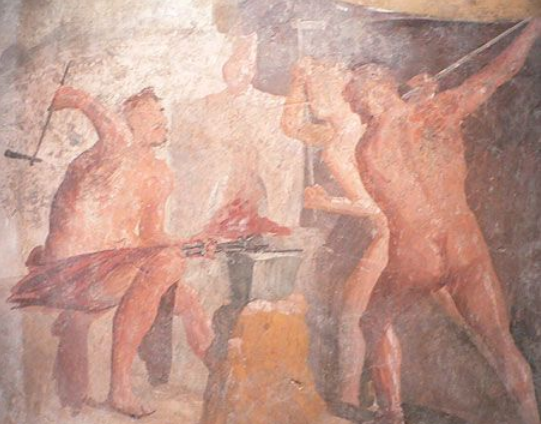
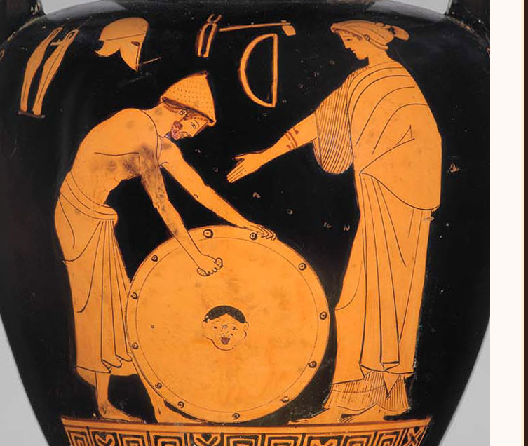
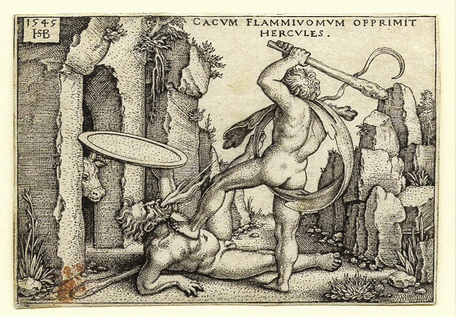

Signa
- Signa, current page.
- Signa et Relationes
- Media
You blocked @Vulcan
Are you sure you want to view these Tweets? Viewing Tweets won't unblock @Vulcan
-
Happy 23rd! I can gaurantee the fields will be safe in Rome, on account of the sacrifices. #Vulcanalia #benevolent #praiseme
Thanks. Twitter will use this to make your timeline better. Undo -
Every time @Venus cheats on me, a volcano erupts. Like if you don't support volcanoes erupting.
Thanks. Twitter will use this to make your timeline better. Undo -

Bad murals like this are why I had to make Mount Vesuvuis erupt. Shame, Pompeii #Pompeii #deservedit #Vesuvius
Thanks. Twitter will use this to make your timeline better. Undo -

Reminder of what I've done - Made the Aegis - Made Achilles' and Hercules' armor - Pandora - Every god's throne - Helped Jupiter give birth to Minerva And more #Bestgod
Thanks. Twitter will use this to make your timeline better. Undo -

RIP Cacus. He was born in perhaps the strangest way possible, but he was a great fire-breathing son. All he did was steal some cows. @Hercules #cacusdidnothingwrong
Thanks. Twitter will use this to make your timeline better. Undo -
Thanks. Twitter will use this to make your timeline better. Undo
-
@Ulysses What did you think of my dogs at Alkinoos's palace?
I'm sorry you had to see this terrible photoshop
Thanks. Twitter will use this to make your timeline better. Undo
{kind=link}